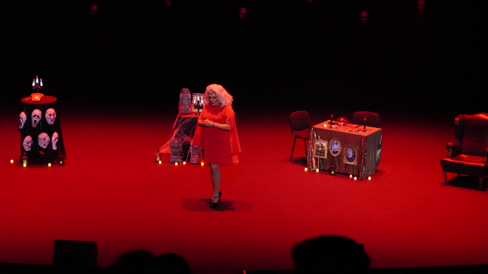

Agosto en Torremolinos tiene fiesta, playa y after-beach de sobra. Lo que no abunda es una noche de teatro y humor en condiciones, y eso es justo lo que trae Sigue la Luz a Plaza Paraíso el jueves 13 de agosto. Xenon Spain y Paca la Piraña suben al escenario de la Plaza de Toros para una propuesta que mezcla humor, identidad y cultura pop, algo que no verás en ningún otro día del cartel de este verano.
Si ya has estado en Loco Bongo o en Furor The Show, sabes lo que Plaza Paraíso hace bien: buen ambiente, buen recinto y entradas que se agotan si esperas demasiado. Sigue la Luz no es la excepción. Aquí tienes cinco motivos concretos para reservar tu noche.
¿Por qué Sigue la Luz es diferente al resto del cartel de Plaza Paraíso?
Sigue la Luz es la única cita de teatro y humor de toda la programación de Plaza Paraíso 2026. Mientras el resto del cartel se reparte entre conciertos, fiestas y gastronomía, este jueves 13 de agosto ofrece un formato escénico con guion, personajes y ritmo de comedia en vivo. Eso significa que no compite con Loco Bongo ni con Furor The Show por el mismo tipo de público. Si ya tienes entrada para otro show del verano, Sigue la Luz es el complemento perfecto: una noche distinta, sin repetir fórmula, dentro del mismo recinto que ya conoces.
Paca la Piraña, un nombre propio del humor y la cultura drag en España
Paca la Piraña lleva años siendo una de las figuras más reconocibles del cabaret y el humor drag en España, con una trayectoria que va del teatro al cine y a los escenarios más queridos del país. Su presencia en Sigue la Luz garantiza un show con personalidad propia, alejado de lo previsible. Si nunca la has visto en directo, esta es la ocasión. Y si ya la conoces, sabes que su forma de conectar con el público es motivo suficiente para reservar la fecha.
Xenon Spain, la cara que ya conoces de Loco Bongo
Xenon Spain presenta también Loco Bongo, uno de los planes más populares del verano en Torremolinos. Su forma de llevar el ritmo de una fiesta o de un show ya se ha ganado al público de la Plaza de Toros, y en Sigue la Luz repite con un registro distinto, más cercano al humor y la comedia.

Luz, color y mucho arte: un show que no se parece a nada.
.png)
¿Merece la pena ir a un espectáculo entre semana en pleno agosto?
Un jueves de agosto en Torremolinos tiene todas las ventajas de la temporada alta sin la aglomeración del fin de semana. Sigue la Luz te da la oportunidad de vivir un evento de Plaza Paraíso con más espacio, colas más cortas y una experiencia más cercana al escenario. Después de las puertas, la zona de fiesta de Torremolinos sigue activa si quieres alargar la noche, así que no tienes que elegir entre el show y la fiesta.
Aforo limitado en un escenario único: la Plaza de Toros de Torremolinos
La Plaza de Toros de Torremolinos es uno de los recintos con más personalidad de la Costa del Sol, y Plaza Paraíso lo ha convertido en el punto de encuentro del verano. El aforo para cada función es limitado, y los shows con nombres propios como Sigue la Luz tienden a llenarse conforme se acerca la fecha. Reservar con antelación no es solo una recomendación. Es la diferencia entre tener tu sitio asegurado o quedarte fuera un jueves 13 de agosto.
En resumen
- Único espectáculo de teatro y humor del cartel de Plaza Paraíso 2026
- Jueves 13 de agosto de 2026 · Plaza de Toros de Torremolinos
- Con Xenon Spain y Paca la Piraña sobre el escenario
- Aforo limitado: mejor reservar con antelación
- Menos aglomeración que un show de fin de semana
Aforo limitado · Jueves 13 de agosto · Plaza de Toros de Torremolinos
Consigue tu entrada aquíPreguntas frecuentes
¿Cuándo es Sigue la Luz en Plaza Paraíso Torremolinos?
Sigue la Luz se representa el jueves 13 de agosto de 2026 en la Plaza de Toros de Torremolinos, dentro de la programación de Plaza Paraíso.
¿Quién actúa en Sigue la Luz?
El show está protagonizado por Xenon Spain y Paca la Piraña, con una propuesta escénica que combina humor, identidad y cultura pop.
¿Dónde puedo comprar entradas para Sigue la Luz?
Las entradas están disponibles en la página oficial del evento en Plaza Paraíso, con aforo limitado en la Plaza de Toros de Torremolinos.
¿Es Sigue la Luz un concierto o una obra de teatro?
Es el único espectáculo de teatro y humor de todo el cartel de Plaza Paraíso 2026. Combina guion, comedia en vivo y presencia escénica, distinto a los conciertos y fiestas del resto de la programación.
¿A qué hora abren las puertas para Sigue la Luz?
La mayoría de los eventos de Plaza Paraíso abren puertas a partir de las 19:00 h, con horario pensado para tardeo y para poder continuar la noche en otras zonas de Torremolinos si lo deseas.